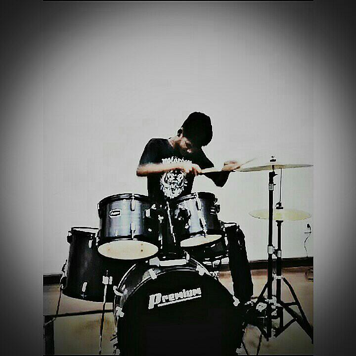

Wilson Lima Jr
Professor
Professor de Artes. Brasileiro. Arte conceitual. Arte popular. Pop Art. Trip-hop. Poesia concreta. Paulo Lemiski. Sci-fi. Distopias. #Et cetera.
Hyan Cardoso
Guitarrista
Natural de Novo Jardim, iniciou sua carreira de guitarrista desde muleque, onde adquiriu sua primeira guitarra que vem aperfeiçoando seus famosos solos de rock.
Messias Junio
Baterista
Tocantinense de 21 anos que desde moleque é aficionado por bateria, com experiências de palco em diversos carnavais juntamente com banda famosa da região. Atualmente estudante do 3° ano do curso Técnico em Informática.

Yan Telles
Baixista
Nascido em Janeiro de 2001, apaixonado por música iniciou sua jornada como guitarrista em Igrejas e lá descobriu o mundo dos graves, se tornando contra baixista após ajudar fundar a banda SN.
Marcos Vinícius
Guitarrista
Natural de Vacaria/RS , o jovem de 16 anos impõe talento nas cordas de guitarra. É um dos novatos do grupo, entrando no começo desse ano (2019).
Lucas
Tecladista
Com apenas 14 anos de idade, demonstra muita personalidade diante das teclas. Entrou para o projeto há apenas 1 mês (março/2019) e desde então vem arracando elogios do público.
Raquel
Vocalista
Natural de Dianópolis, essa jovem cantora de 17 anos que esbanja simpatia e segurança em suas apresentações participa do grupo desde o segundo semestre de 2018. Atualmente cursa o 3° ano do curso Técnico em Informática.
Manoela
Vocalista
No auge de seus 17 anos e também natural de Dianópolis, Manoela tem sido muito importante para a banda, pelo fato de fazer dupla com a Raquel em músicas que requerem uma segunda voz. Estudante do 3° ano do curso Técnico em Informática.
Maryane
Vocalista/Violonista
A estudante de 16 anos do 2° ano do curso Técnico em Informática que tem como "xodó" o Violão, participa da banda desde Agosto/2018. Vem mostrando talento também em apresentações solo (voz e violão).